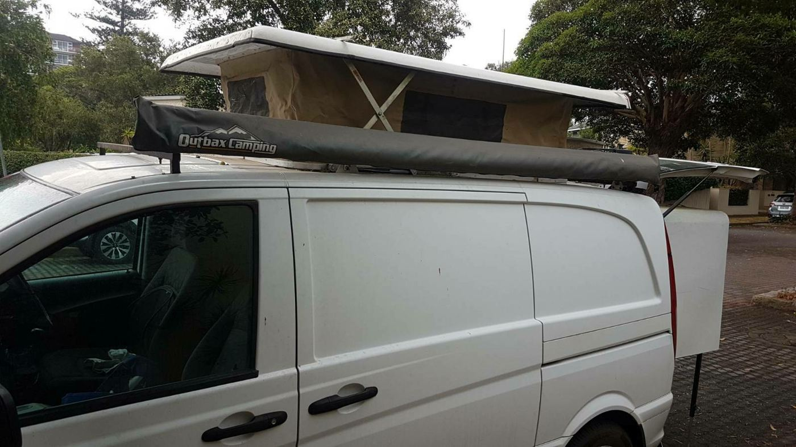

The basics of off-grid power, simplified

If you've ever stood in a camping store while someone talks about amp-hours, MPPT and pure sine, and nodded along while understanding none of it, this guide is for you. A van, caravan or 4WD power system is really just four parts doing four jobs.
The short version
- A battery stores your power. A solar panel and a DC-DC charger fill it up. An inverter lets you use normal plugs.
- Size everything from one number: how much power you use in a day.
- Winter, heat and your fridge are what catch most people out.
1. The battery stores the power
Your house battery (the second battery, separate from the one that starts your engine) is where all your power lives. Everything else either fills it up or uses it.
Battery size is measured in amp-hours (Ah). A 200Ah battery holds twice as much as a 100Ah one. Your daily use can be measured the same way, which makes the maths easy: if your fridge, lights and phones use 50Ah a day, a battery that gives you 100Ah of usable power lasts about two days with no charging at all.
The type matters a lot. With lithium you can use almost all of it. With AGM you should only use about half. We cover that properly in Lithium vs AGM.
2. Solar panels top it up for free
Solar panels turn sunlight into charge for your battery. They're measured in watts (W), which tells you how much they make in perfect, full-strength sun. In real life you get less: heat, dust, a flat roof and cloud all take a cut.
How much solar you need depends hugely on where and when you travel. The same 200W panel makes several times more power in a Darwin winter than a Hobart one. Our guide How much solar do I need? has the numbers for every state.
Solar needs a regulator (often called an MPPT controller) between the panels and the battery. It stops the battery overcharging and squeezes the most out of the sun. Many DC-DC chargers have one built in.
3. A DC-DC charger fills up while you drive
Your engine's alternator makes power while you drive. A DC-DC charger takes some of that and charges your house battery properly, without draining the battery that starts your car.
It's sized in amps (A): a 25A charger puts back up to about 25Ah for every hour of driving. If you drive a few hours most days, a DC-DC charger can do more work than your solar. Most modern vehicles have "smart" alternators, so choose a charger that says it supports them.
4. An inverter turns battery power into house power
Your battery runs at 12 volts. Normal plugs need 240 volts. An inverter converts one to the other so you can run a laptop charger, a coffee machine or a hair dryer.
You only need one if you have 240V appliances, and it should be a pure sine wave inverter, which makes clean power that sensitive gear needs. Inverters waste about 15% of what passes through them, so run things on 12V wherever you can. Big items like kettles and induction cooktops need big inverters, a big battery and thick cables.
How it all fits together
Think of it as income and spending. Your appliances spend power every day. Your solar and driving earn it back. The battery is your savings for days when you earn nothing, like a grey, rainy day parked up. A good setup earns at least as much as it spends on a normal day, and has enough savings to ride out the bad ones.
So everything starts with one number: how much power you use in a day. From there:
- Your battery covers a day or two with no charging.
- Your solar and driving put back what you use on a typical day, in the hardest season you travel.
- Your inverter handles the biggest 240V thing you'll run.
The Power Planner does all of this for you. Pick what you run and where you travel, and it sizes each part.
Open the Power Planneror grab a ready-made kitHow the power flows
Here's how the parts connect. If it helps, picture water: the battery is a tank, the cables are pipes, and power flows along them like water.
- Solar panel: catches sunlight and turns it into power, like rain falling on a roof.
- Solar controller (also called a regulator or MPPT): the gatekeeper between the panel and the battery. It lets in the right amount so the tank never overflows, and squeezes the most out of weak sun.
- DC-DC charger: a second tap, filling the tank from your engine while you drive. Many have a solar controller built in, so one box does both jobs.
- Battery: the tank. Everything flows in here, and everything you run draws from it.
- Isolator switch: the main tap. One switch turns the whole system off.
- Fuse block: every circuit gets its own fuse. If something goes wrong, the fuse breaks first, before a cable can overheat.
- Inverter: a travel adaptor that turns battery power into house power for normal plugs.
- Cables: the pipes. Too thin and they get hot and waste power, so your auto electrician sizes each one.
This shows how the parts connect, not how to wire them. That's a job for a licensed auto electrician.
The bits that hold it together
- Cables sized for the job. Too thin and they heat up and waste power.
- Fuses or circuit breakers on every circuit, so a fault can't start a fire.
- An isolator switch to turn everything off when an auto electrician is working on the electrics, or when you're storing the van.
- A battery monitor with a shunt, your fuel gauge, so you know exactly how full the battery is.
The mistakes we see most
- Sizing for summer. Winter sun is much weaker in the south. If you travel all year, plan for winter.
- Forgetting the fridge. It runs day and night and is usually your biggest user, more so in hot weather.
- Running an AGM flat. Regularly using more than half shortens its life a lot.
- A cheap inverter for a coffee machine. Big start-up surges trip small or cheap inverters.
- Skipping the fuses to save a few dollars.

We've had a Delica, a Vito, a slide-on camper and a Hiace, and the lesson is always the same: work out what you actually run first, then size everything else to that. We learned it the long way round.
Quick answers
What do I need for off-grid power in a van?
A battery to store power, solar panels and a DC-DC charger to fill it up, and an inverter only if you want normal 240V plugs. Size everything from one number: how much power you use in a day.
What does a DC-DC charger do?
It charges your second battery from the car while you drive. It works properly with modern smart alternators, which a simple isolator doesn't.
Do I need an inverter in my van?
Only if you want to run things with a normal 240V plug. Fridges, lights, fans and USB chargers run straight off 12V, which wastes less power.

Kiran, Mitch & Ziggy
We last checked this page in October 2026. Spotted something that's changed, or got a question we didn't answer? Tell us, we read every message.
Keep reading
 Batteries
BatteriesLithium vs AGM: which battery should you get?
The real difference, what it means for size, weight and cost, and when AGM still makes sense. Solar
SolarHow much solar do I need? By state and season
Why a Hobart winter and a Darwin winter need very different setups, with a table for every state. Charging
ChargingDC-DC chargers explained: charging while you drive
What they do, what size you need, and why modern cars with smart alternators need one. Caravans
Caravans